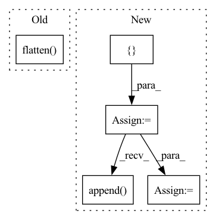

Pattern ID :26509
Before Change
element_numbers = np.arange(output_elements).reshape(
output_columns, output_rows)
strided_rows = element_numbers[::stride, ::stride].flatten()
// TODO: finish me!
indices = convolution_matrix.coalesce().indices().numpy()
values = convolution_matrix.coalesce().values().numpy()After Change
indices = convolution_matrix.coalesce().indices().numpy()
values = convolution_matrix.coalesce().values().numpy()
mask = []
strided_row_indices = []
non_zero_row_entries = indices[0, :]
counter = 0
previous_entry = 0
for entry in non_zero_row_entries:
if entry in strided_rows:
mask.append(True)
if previous_entry != entry:
counter += 1
strided_row_indices.append( counter)
else:
mask.append(False)
previous_entry = entry
mask = np.array(mask)
strided_row_indices = np.array(strided_row_indices)
strided_col_indices = indices[1, mask]
strided_indices = np.stack([strided_row_indices, strided_col_indices], 0)
strided_values = values[mask]In pattern: SUPERPATTERN
Frequency: 4
Non-data size: 5
Instances Fragment ID: 79553612
Project Name: v0lta/pytorch-wavelet-toolbox
Commit Name: f659f1a0eacbd03f1438d0c70729ce7e95eb9ea0
Time: 2021-09-13
Author: moritz.wolter@scai.fraunhofer.de
File Name: src/ptwt/matmul_transform_2d.py
M Class Name: AnonimousClass
N Class Name: AnonimousClass
M Method Name: construct_strided_conv2d_matrix(5)
N Method Name: construct_strided_conv2d_matrix(5)
M Parent Class:
N Parent Class:
M File Name: src/ptwt/matmul_transform_2d.py
N File Name: src/ptwt/matmul_transform_2d.py
M Start Line: 80
M End Line: 113
N Start Line: 88
N End Line: 127
Before Change
action_logprobs = action_probs.log()
// policy network loss copmoses of both the kl div loss as well as the auxiliary loss
aux_loss = F.smooth_l1_loss(policy_values.flatten() , rewards)
loss_kl = F.kl_div(action_logprobs, old_action_probs, reduction="batchmean")
policy_loss = aux_loss + loss_kl
After Change
// gather states and target values into one tensor
states = []
rewards = []
old_values = []
for state, reward, old_value in aux_memories:
states.append(state)
rewards.append(reward)
old_values.append( old_value)
states = torch.cat(states)
rewards = torch.cat(rewards)
old_values = torch.cat(old_values)
// get old action predictions for minimizing kl divergence and clipping respectively
old_action_probs, _ = self.actor(states) Fragment ID: 79553625
Project Name: lucidrains/phasic-policy-gradient
Commit Name: d9741893dd66c02702e9640bd3d12b5bd68aaf4b
Time: 2020-09-29
Author: lucidrains@gmail.com
File Name: train.py
M Class Name: PPG
N Class Name: PPG
M Method Name: learn_aux(2)
N Method Name: learn_aux(2)
M Parent Class:
N Parent Class:
M File Name: train.py
N File Name: train.py
M Start Line: 225
M End Line: 245
N Start Line: 221
N End Line: 246
Before Change
for i in range(B):
valid = valids[i].bool() // [P]
pred, gt = pred_pcs[i], gt_pcs[i] // [P, N, 3]
pred = pred[valid].flatten( 0, 1) .cpu().numpy()
gt = gt[valid].flatten(0, 1).cpu().numpy() // [n*N, 3]
pred_pcs_lst.append(pred)
gt_pcs_lst.append(gt)After Change
def sample_assembly(self, data_dict):
Sample assembly for visualization.
part_pcs, valids = data_dict["part_pcs"], data_dict["part_valids"]
sample_pred_pcs = []
for _ in range(self.sample_iter):
out_dict = self.forward(data_dict)
pred_trans, pred_quat = out_dict["trans"], out_dict["quat"]
pred_pcs = qtransform(pred_trans, pred_quat, part_pcs)
sample_pred_pcs.append( pred_pcs)
gt_trans, gt_quat = data_dict["part_trans"], data_dict["part_quat"]
gt_pcs = qtransform(gt_trans, gt_quat, part_pcs) // [B, P, N, 3]
colors = np.array(self.cfg.data.colors)
B = part_pcs.shape[0]
pred_pcs_lst, gt_pcs_lst = [[] for _ in range(B)], []
for i in range(self.sample_iter):
pred_pcs = sample_pred_pcs[i] // [B, P, N, 3]
for j in range(B):
valid = valids[j].bool() // [P]
pred = pred_pcs[j][valid].cpu().numpy() // [p, N, 3] Fragment ID: 79553621
Project Name: wuziyi616/multi_part_assembly
Commit Name: 0148c98759e6c3ff6b944136ebc93aeb67f0d421
Time: 2022-03-08
Author: dazitu616@gmail.com
File Name: multi_part_assembly/models/pn_transformer/network.py
M Class Name: PNTransformer
N Class Name: PNTransformer
M Method Name: sample_assembly(2)
N Method Name: sample_assembly(2)
M Parent Class: pl.LightningModule
N Parent Class: pl.LightningModule
M File Name: multi_part_assembly/models/pn_transformer/network.py
N File Name: multi_part_assembly/models/pn_transformer/network.py
M Start Line: 372
M End Line: 387
N Start Line: 404
N End Line: 430
Before Change
// input should be (seq_len, batch, input_size)
output, h_n = self.rnn(x.unsqueeze(1))
output = self.fc(output.flatten() )
// print(output)
// return torch.mean(output, dim=0)
return outputAfter Change
self.fc = nn.Linear(100, 1)
def forward(self, st_maps, target):
output_per_clip = []
// so as to reflect a batch_size = 1
st_maps = st_maps.unsqueeze(0)
for t in range(st_maps.size(1)):
with torch.no_grad():
x = self.resnet18(st_maps[:, t, :, :, :])
// collapse dimensions to BSx512 (resnet o/p)
x = x.view(x.size(0), -1)
// output dim: BSx1
x = self.fc_resnet(x)
// For now since we"re working with BS = 1, lets collapse that dimension
output_per_clip.append( x.squeeze(0))
// input should be (seq_len, batch, input_size)
output_seq = torch.stack(output_per_clip, dim=0).transpose_(0, 1)
gru_output, h_n = self.rnn(output_seq.unsqueeze(1))
return output_seq, gru_output.squeeze(0)
Fragment ID: 79553620
Project Name: anweshcr7/rhythmnet
Commit Name: 5486b317570359a6ab1971196350ee70894b19db
Time: 2021-02-02
Author: anwesh.marwade@beyondsports.nl
File Name: src/models/rhythmNet.py
M Class Name: RhythmNet
N Class Name: RhythmNet
M Method Name: forward(3)
N Method Name: forward(3)
M Parent Class: nn.Module
N Parent Class: nn.Module
M File Name: src/models/rhythmNet.py
N File Name: src/models/rhythmNet.py
M Start Line: 25
M End Line: 32
N Start Line: 32
N End Line: 48